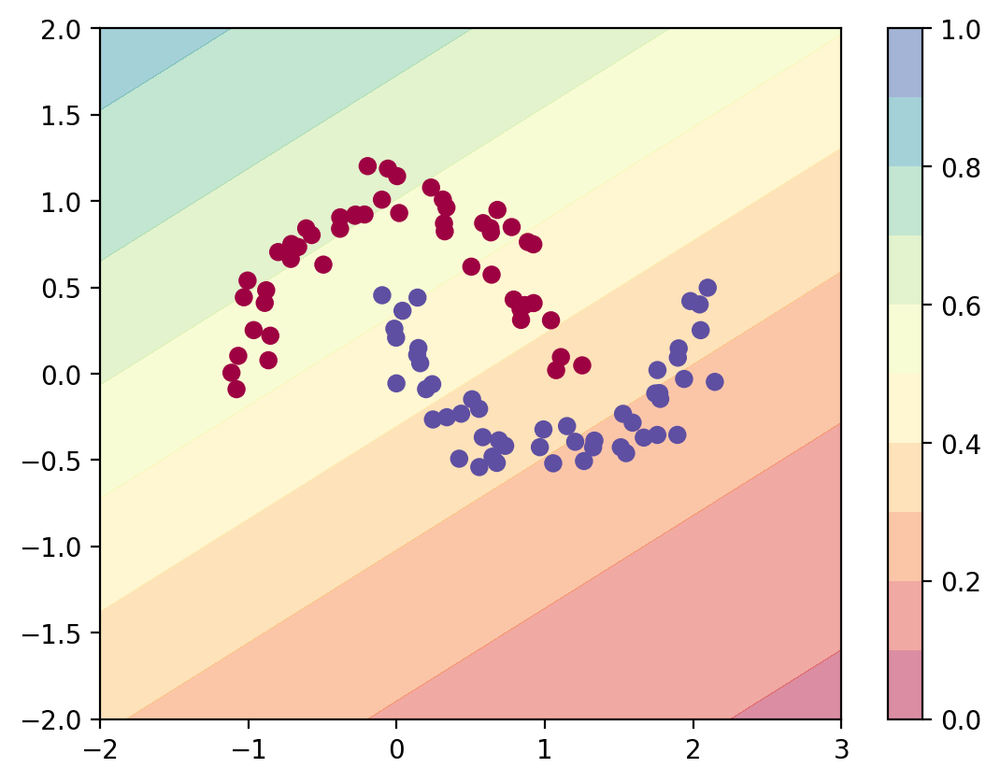
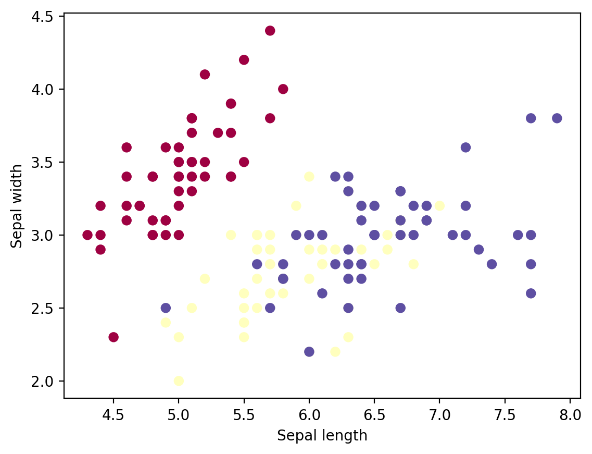
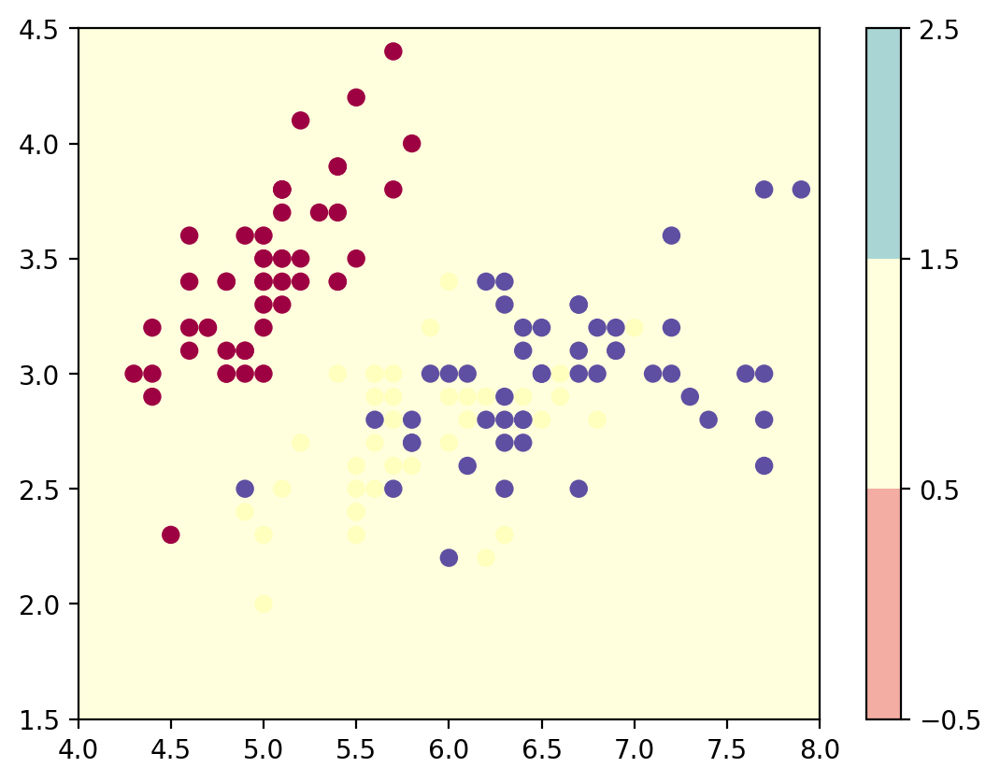

import numpy as np
import sklearn
import torch
import torch.nn as nn
import torch.nn.functional as F
import matplotlib.pyplot as plt
from latexify import *
%matplotlib inline
%config InlineBackend.figure_format = 'retina'Logistic Regression Torch
ML
class LogisticRegression(nn.Module):
def __init__(self, input_dim):
super(LogisticRegression, self).__init__()
self.linear = nn.Linear(input_dim, 1)
def forward(self, x):
logits = self.linear(x)
return logitsfrom sklearn.datasets import make_moonsX, y = make_moons(n_samples=100, noise=0.1)plt.scatter(X[:, 0], X[:, 1], c=y, cmap=plt.cm.Spectral)
log_reg = LogisticRegression(2)# Predict with the model
def predict_plot_grid(model):
XX, YY = torch.meshgrid(torch.linspace(-2, 3, 100), torch.linspace(-2, 2, 100))
X_grid = torch.cat([XX.unsqueeze(-1), YY.unsqueeze(-1)], dim=-1)
logits = model(X_grid)
probs = torch.sigmoid(logits).reshape(100, 100)
plt.contourf(XX, YY, probs.detach().numpy(), levels=[0.0, 0.1, 0.2,0.3, 0.4,0.5, 0.6,0.7, 0.8,0.9, 1.0],
cmap=plt.cm.Spectral, alpha=0.5)
plt.colorbar()
plt.scatter(X[:, 0], X[:, 1], c=y, cmap=plt.cm.Spectral)
predict_plot_grid(log_reg)
/Users/nipun/mambaforge/lib/python3.10/site-packages/torch/functional.py:504: UserWarning: torch.meshgrid: in an upcoming release, it will be required to pass the indexing argument. (Triggered internally at /Users/runner/work/pytorch/pytorch/pytorch/aten/src/ATen/native/TensorShape.cpp:3484.)
return _VF.meshgrid(tensors, **kwargs) # type: ignore[attr-defined]
opt = torch.optim.Adam(log_reg.parameters(), lr=0.01)
converged = False
prev_loss = 1e8
i = 0
while not converged:
opt.zero_grad()
logits = log_reg(torch.tensor(X, dtype=torch.float32))
loss = nn.BCEWithLogitsLoss()(logits, torch.tensor(y, dtype=torch.float32).view(-1, 1))
loss.backward()
opt.step()
if i%10==0:
print(i, loss.item())
if np.abs(prev_loss - loss.item()) < 1e-5:
converged = True
prev_loss = loss.item()
i = i + 10 0.9349006414413452
10 0.8724980354309082
20 0.817572832107544
30 0.7688440084457397
40 0.7244434952735901
50 0.6841480731964111
60 0.648054838180542
70 0.6158449053764343
80 0.5871520638465881
90 0.5616370439529419
100 0.5389482378959656
110 0.5187534093856812
120 0.5007484555244446
130 0.48465821146965027
140 0.4702383279800415
150 0.4572741687297821
160 0.4455784261226654
170 0.434988796710968
180 0.4253652095794678
190 0.4165867269039154
200 0.4085492193698883
210 0.4011631906032562
220 0.3943515419960022
230 0.3880476653575897
240 0.38219425082206726
250 0.3767416477203369
260 0.37164685130119324
270 0.36687251925468445
280 0.36238619685173035
290 0.3581596612930298
300 0.3541681170463562
310 0.3503900170326233
320 0.34680625796318054
330 0.3434002697467804
340 0.340157151222229
350 0.33706405758857727
360 0.3341093361377716
370 0.3312827944755554
380 0.32857537269592285
390 0.3259788155555725
400 0.3234858810901642
410 0.32109004259109497
420 0.3187854290008545
430 0.3165667653083801
440 0.3144291937351227
450 0.3123684227466583
460 0.31038039922714233
470 0.3084614872932434
480 0.30660852789878845
490 0.30481836199760437
500 0.30308809876441956
510 0.30141526460647583
520 0.2997974157333374
530 0.2982322573661804
540 0.29671770334243774
550 0.2952517569065094
560 0.2938326597213745
570 0.29245856404304504
580 0.29112792015075684
590 0.2898390293121338
600 0.28859052062034607
610 0.2873808741569519
620 0.2862089276313782
630 0.2850732207298279
640 0.2839725613594055
650 0.28290584683418274
660 0.28187182545661926
670 0.28086957335472107
680 0.2798978090286255
690 0.27895569801330566
700 0.278042197227478
710 0.2771564722061157
720 0.2762974798679352
730 0.2754644453525543
740 0.2746565043926239
750 0.27387282252311707
760 0.2731126844882965
770 0.2723752558231354
780 0.27165982127189636
790 0.27096569538116455
800 0.270292192697525
810 0.26963862776756287
820 0.2690044343471527
830 0.26838886737823486
840 0.2677914798259735
850 0.2672116458415985
860 0.2666487991809845
870 0.2661023437976837
880 0.26557186245918274
890 0.2650567889213562
900 0.2645567059516907
910 0.26407110691070557
920 0.2635995149612427
930 0.26314154267311096
940 0.2626967132091522
950 0.2622646987438202
960 0.26184508204460144
970 0.26143744587898254
980 0.26104146242141724
990 0.2606567442417145
1000 0.260282963514328
1010 0.25991976261138916
1020 0.25956690311431885
1030 0.259223997592926
1040 0.2588907480239868
1050 0.2585669755935669
1060 0.25825226306915283
1070 0.2579464018344879
1080 0.2576490640640259
1090 0.25736016035079956
1100 0.25707927346229553
1110 0.25680628418922424
1120 0.25654086470603943
1130 0.25628283619880676
1140 0.2560320496559143
1150 0.2557882070541382
1160 0.25555115938186646
1170 0.25532066822052
1180 0.25509655475616455
1190 0.2548786997795105
1200 0.25466686487197876
1210 0.254460871219635
1220 0.2542605996131897
1230 0.2540658116340637
1240 0.2538764476776123
1250 0.2536923289299011
1260 0.25351327657699585
1270 0.25333911180496216
1280 0.25316980481147766
1290 0.25300514698028564
1300 0.25284504890441895
1310 0.25268933176994324
1320 0.25253793597221375
1330 0.25239071249961853
1340 0.25224751234054565
1350 0.25210827589035034
1360 0.25197288393974304
1370 0.2518412172794342
1380 0.25171321630477905
1390 0.25158870220184326
1400 0.25146764516830444
1410 0.25134992599487305
1420 0.2512354850769043
1430 0.25112417340278625
1440 0.25101593136787415
1450 0.2509107291698456
1460 0.2508084177970886predict_plot_grid(log_reg)
# Iris dataset
from sklearn.datasets import load_iris
iris = load_iris()X = iris.data
y = iris.targetplt.scatter(X[:, 0], X[:, 1], c=y, cmap=plt.cm.Spectral)
plt.xlabel('Sepal length')
plt.ylabel('Sepal width')Text(0, 0.5, 'Sepal width')
class ThreeClassLogisticRegression(nn.Module):
def __init__(self, input_dim):
super(ThreeClassLogisticRegression, self).__init__()
self.linear1 = nn.Linear(input_dim, 1)
self.linear2 = nn.Linear(input_dim, 1)
self.linear3 = nn.Linear(input_dim, 1)
def forward(self, x):
logits1 = self.linear1(x)
logits2 = self.linear2(x)
logits3 = self.linear3(x)
return torch.cat([logits1, logits2, logits3], dim=-1)
class MultiClassLogisticRegression(nn.Module):
def __init__(self, input_dim, num_classes):
super(MultiClassLogisticRegression, self).__init__()
self.linear = nn.Linear(input_dim, num_classes)
def forward(self, x):
logits = self.linear(x)
return logitsmlr = ThreeClassLogisticRegression(2)X_tensor = torch.tensor(X, dtype=torch.float32)[:,:2]
y_tensor = torch.tensor(y, dtype=torch.long)mlr(X_tensor).shapetorch.Size([150, 3])mlr_efficient = MultiClassLogisticRegression(2, 3)
mlr_efficient(X_tensor).shapetorch.Size([150, 3])mlr_efficient(X_tensor[:5])tensor([[-0.4276, 2.0524, -1.1928],
[-0.4378, 1.7861, -1.3077],
[-0.4070, 1.8339, -1.1492],
[-0.4033, 1.7681, -1.1480],
[-0.4122, 2.0762, -1.1135]], grad_fn=<AddmmBackward0>)
nn.Softmax(dim=-1)(mlr_efficient(X_tensor[:5])).sum(dim=-1)tensor([1.0000, 1.0000, 1.0000, 1.0000, 1.0000], grad_fn=<SumBackward1>)def plot_most_probable_class(model):
XX, YY = torch.meshgrid(torch.linspace(4, 8, 100), torch.linspace(1.5, 4.5, 100))
X_grid = torch.cat([XX.unsqueeze(-1), YY.unsqueeze(-1)], dim=-1)
logits = model(X_grid)
predicted_class = torch.argmax(logits, dim=-1)
plt.contourf(XX, YY, predicted_class.reshape(100, 100).detach().numpy(), levels=[-0.5, 0.5, 1.5, 2.5],
cmap=plt.cm.Spectral, alpha=0.5)
plt.colorbar()
plt.scatter(X[:, 0], X[:, 1], c=y, cmap=plt.cm.Spectral)
plot_most_probable_class(mlr_efficient)
logits = mlr_efficient(X_tensor)
nn.Softmax(dim=-1)(logits[:5])tensor([[0.0746, 0.8907, 0.0347],
[0.0938, 0.8669, 0.0393],
[0.0919, 0.8643, 0.0438],
[0.0976, 0.8560, 0.0464],
[0.0739, 0.8895, 0.0366]], grad_fn=<SoftmaxBackward0>)opt = torch.optim.Adam(mlr_efficient.parameters(), lr=0.01)
converged = False
prev_loss = 1e8
i = 0
while not converged:
opt.zero_grad()
logits = mlr_efficient(X_tensor)
loss = F.cross_entropy(logits, y_tensor)
loss.backward()
opt.step()
if i%10==0:
print(i, loss.item())
if np.abs(prev_loss - loss.item()) < 1e-5:
converged = True
prev_loss = loss.item()
i = i + 10 2.2876317501068115
10 1.4277923107147217
20 1.1896789073944092
30 1.173270583152771
40 1.1399130821228027
50 1.1091488599777222
60 1.0889300107955933
70 1.065254807472229
80 1.0434192419052124
90 1.0214812755584717
100 1.0000522136688232
110 0.9791292548179626
120 0.9588465094566345
130 0.9392611980438232
140 0.9204307794570923
150 0.9023836255073547
160 0.885133683681488
170 0.8686791062355042
180 0.8530094027519226
190 0.8381044268608093
200 0.8239390254020691
210 0.8104835748672485
220 0.797706127166748
230 0.7855730056762695
240 0.7740503549575806
250 0.7631040811538696
260 0.7527009844779968
270 0.7428091168403625
280 0.733397364616394
290 0.7244365811347961
300 0.7158986330032349
310 0.7077574729919434
320 0.6999881863594055
330 0.6925678849220276
340 0.685474693775177
350 0.6786885261535645
360 0.6721901893615723
370 0.6659626960754395
380 0.6599892973899841
390 0.6542547345161438
400 0.6487451791763306
410 0.6434471607208252
420 0.6383485794067383
430 0.633437991142273
440 0.628704845905304
450 0.624139130115509
460 0.6197317242622375
470 0.6154740452766418
480 0.611358106136322
490 0.6073764562606812
500 0.6035220623016357
510 0.5997886061668396
520 0.5961697101593018
530 0.5926598906517029
540 0.5892537236213684
550 0.5859463214874268
560 0.5827329754829407
570 0.5796091556549072
580 0.5765710473060608
590 0.5736144781112671
600 0.5707359313964844
610 0.56793212890625
620 0.565199613571167
630 0.5625355243682861
640 0.5599370002746582
650 0.5574012994766235
660 0.5549259781837463
670 0.5525084137916565
680 0.5501465797424316
690 0.5478382110595703
700 0.5455812811851501
710 0.5433740019798279
720 0.5412144660949707
730 0.5391008257865906
740 0.5370318293571472
750 0.535005509853363
760 0.5330204963684082
770 0.5310754179954529
780 0.5291690826416016
790 0.527300238609314
800 0.5254673957824707
810 0.5236696004867554
820 0.5219057202339172
830 0.5201747417449951
840 0.5184756517410278
850 0.5168076157569885
860 0.5151694416999817
870 0.5135605335235596
880 0.5119800567626953
890 0.5104270577430725
900 0.5089008212089539
910 0.5074005722999573
920 0.5059257745742798
930 0.5044757723808289
940 0.5030497908592224
950 0.5016472935676575
960 0.5002675652503967
970 0.49891015887260437
980 0.49757450819015503
990 0.4962601363658905
1000 0.49496641755104065
1010 0.4936929941177368
1020 0.4924393594264984
1030 0.49120497703552246
1040 0.4899895191192627
1050 0.4887924790382385
1060 0.4876135289669037
1070 0.48645222187042236
1080 0.48530831933021545
1090 0.4841812551021576
1100 0.4830707311630249
1110 0.4819765090942383
1120 0.4808981418609619
1130 0.4798354208469391
1140 0.478787899017334
1150 0.47775542736053467
1160 0.4767375588417053
1170 0.4757342040538788
1180 0.47474488615989685
1190 0.4737694263458252
1200 0.4728076756000519
1210 0.47185924649238586
1220 0.47092387080192566
1230 0.4700014293193817
1240 0.4690915048122406
1250 0.4681941270828247
1260 0.467308908700943
1270 0.4664357006549835
1280 0.4655742347240448
1290 0.4647243618965149
1300 0.4638858437538147
1310 0.46305856108665466
1320 0.4622422754764557
1330 0.4614367187023163
1340 0.4606419801712036
1350 0.4598575830459595
1360 0.45908355712890625
1370 0.45831960439682007
1380 0.457565575838089
1390 0.45682138204574585
1400 0.4560868740081787
1410 0.455361932516098
1420 0.4546462893486023
1430 0.45393991470336914
1440 0.4532424509525299
1450 0.4525540769100189
1460 0.45187443494796753
1470 0.4512034058570862
1480 0.4505409896373749
1490 0.44988682866096497
1500 0.4492410719394684
1510 0.44860342144966125
1520 0.44797372817993164
1530 0.44735199213027954
1540 0.4467381238937378
1550 0.4461318850517273
1560 0.4455331563949585
1570 0.444941908121109
1580 0.4443580210208893
1590 0.44378137588500977
1600 0.4432118237018585
1610 0.44264933466911316
1620 0.44209375977516174
1630 0.4415450394153595
1640 0.44100311398506165
1650 0.4404677450656891
1660 0.4399389624595642
1670 0.4394165575504303
1680 0.43890058994293213
1690 0.438390851020813
1700 0.4378872811794281
1710 0.4373898208141327
1720 0.436898410320282
1730 0.4364128112792969
1740 0.43593311309814453
1750 0.4354592263698578
1760 0.43499094247817993
1770 0.4345283508300781
1780 0.4340711832046509
1790 0.4336196482181549
1800 0.43317320942878723
1810 0.4327322244644165
1820 0.432296484708786
1830 0.4318659007549286
1840 0.4314402639865875
1850 0.43101978302001953
1860 0.4306041896343231
1870 0.4301934838294983
1880 0.42978763580322266
1890 0.4293864071369171
1900 0.4289900064468384
1910 0.4285980761051178
1920 0.4282107651233673
1930 0.427827924489975
1940 0.4274495542049408
1950 0.4270755648612976
1960 0.4267057776451111
1970 0.4263403117656708
1980 0.42597898840904236
1990 0.4256218671798706
2000 0.4252687394618988
2010 0.4249196946620941
2020 0.4245745837688446
2030 0.42423343658447266
2040 0.42389607429504395
2050 0.42356255650520325
2060 0.423232764005661
2070 0.4229067265987396
2080 0.42258426547050476
2090 0.42226549983024597
2100 0.42195025086402893
2110 0.42163845896720886
2120 0.42133021354675293
2130 0.42102527618408203
2140 0.4207237660884857
2150 0.4204255938529968
2160 0.4201306700706482
2170 0.41983893513679504
2180 0.41955047845840454
2190 0.41926509141921997
2200 0.4189828038215637
2210 0.4187036156654358
2220 0.41842740774154663
2230 0.41815415024757385
2240 0.41788384318351746
2250 0.41761642694473267
2260 0.4173519015312195
2270 0.41709014773368835
2280 0.41683119535446167
2290 0.4165749251842499
2300 0.41632139682769775
2310 0.41607049107551575
2320 0.41582220792770386
2330 0.41557666659355164
2340 0.41533347964286804
2350 0.41509291529655457
2360 0.41485482454299927
2370 0.41461917757987976
2380 0.41438594460487366
2390 0.4141550362110138
2400 0.4139265716075897
2410 0.4137003421783447
2420 0.41347646713256836
2430 0.41325485706329346
2440 0.41303539276123047
2450 0.41281819343566895
2460 0.41260311007499695
2470 0.41239017248153687
2480 0.41217929124832153
2490 0.4119705855846405
2500 0.4117638170719147
2510 0.411559134721756
2520 0.4113563895225525
2530 0.41115570068359375
2540 0.41095682978630066
2550 0.4107598662376404
2560 0.4105648696422577
2570 0.41037166118621826
2580 0.4101802706718445
2590 0.40999075770378113
2600 0.40980294346809387
2610 0.4096169173717499
2620 0.40943264961242676
2630 0.40925002098083496
2640 0.40906909108161926
2650 0.4088898301124573
2660 0.4087121784687042
2670 0.4085361659526825
2680 0.4083617031574249
2690 0.4081888198852539
2700 0.40801751613616943
2710 0.40784770250320435
2720 0.40767937898635864
2730 0.4075125753879547
2740 0.407347172498703
2750 0.4071832001209259
2760 0.4070206582546234
2770 0.40685951709747314
2780 0.4066997766494751
2790 0.4065413773059845
2800 0.40638434886932373
2810 0.40622857213020325
2820 0.4060741662979126
2830 0.40592101216316223
2840 0.40576907992362976
2850 0.40561842918395996
2860 0.40546900033950806
2870 0.40532082319259644
2880 0.40517380833625793
2890 0.40502792596817017
2900 0.4048832654953003
2910 0.40473973751068115
2920 0.40459728240966797
2930 0.4044559895992279
2940 0.4043157994747162
2950 0.40417665243148804
2960 0.40403860807418823
2970 0.403901606798172
2980 0.40376555919647217
2990 0.40363067388534546
3000 0.40349671244621277
3010 0.40336373448371887
3020 0.40323179960250854
3030 0.40310072898864746
3040 0.40297067165374756
3050 0.4028415381908417
3060 0.4027132987976074
3070 0.4025859832763672
3080 0.40245962142944336
3090 0.4023340940475464
3100 0.40220946073532104
3110 0.4020856022834778
3120 0.40196263790130615
3130 0.4018405079841614
3140 0.40171927213668823
3150 0.40159881114959717
3160 0.401479035615921
3170 0.4013602137565613
3180 0.40124207735061646
3190 0.4011247456073761
3200 0.40100815892219543
3210 0.40089231729507446
3220 0.4007771611213684
3230 0.4006628096103668
3240 0.4005492031574249
3250 0.400436133146286
3260 0.40032392740249634
3270 0.40021228790283203
3280 0.40010136365890503
3290 0.39999115467071533
3300 0.3998815715312958
3310 0.39977261424064636
3320 0.3996643126010895
3330 0.3995566666126251
3340 0.39944958686828613
3350 0.3993431627750397
3360 0.3992373049259186
3370 0.39913210272789
3380 0.3990274667739868
3390 0.398923397064209
3400 0.3988198935985565
3410 0.3987169563770294
3420 0.3986146152019501
3430 0.3985127806663513
3440 0.39841151237487793mlr_efficient(X_tensor[:5])tensor([[ 3.3141, -2.0900, -3.7057],
[ 1.1409, -1.1217, -3.2703],
[ 3.4758, -1.6582, -4.0551],
[ 3.3553, -1.4965, -4.0989],
[ 4.4815, -2.3582, -4.0981]], grad_fn=<AddmmBackward0>)pred = F.softmax(mlr_efficient(X_tensor), dim=-1).detach().numpy()import pandas as pddf = pd.DataFrame(pred, columns=iris.target_names)
df["GT"] = iris.target
df| setosa | versicolor | virginica | GT | |
|---|---|---|---|---|
| 0 | 0.994636 | 0.004474 | 0.000889 | 0 |
| 1 | 0.895877 | 0.093246 | 0.010877 | 0 |
| 2 | 0.993612 | 0.005855 | 0.000533 | 0 |
| 3 | 0.991676 | 0.007750 | 0.000574 | 0 |
| 4 | 0.998743 | 0.001069 | 0.000188 | 0 |
| ... | ... | ... | ... | ... |
| 145 | 0.000091 | 0.306116 | 0.693793 | 2 |
| 146 | 0.000021 | 0.511070 | 0.488909 | 2 |
| 147 | 0.000359 | 0.380096 | 0.619545 | 2 |
| 148 | 0.070860 | 0.428247 | 0.500893 | 2 |
| 149 | 0.018367 | 0.611113 | 0.370520 | 2 |
150 rows × 4 columns
# Find prediction
y_pred = pred.argmax(axis=-1)
df["Predicted Class"] = y_preddf| setosa | versicolor | virginica | GT | Predicted Class | |
|---|---|---|---|---|---|
| 0 | 0.994636 | 0.004474 | 0.000889 | 0 | 0 |
| 1 | 0.895877 | 0.093246 | 0.010877 | 0 | 0 |
| 2 | 0.993612 | 0.005855 | 0.000533 | 0 | 0 |
| 3 | 0.991676 | 0.007750 | 0.000574 | 0 | 0 |
| 4 | 0.998743 | 0.001069 | 0.000188 | 0 | 0 |
| ... | ... | ... | ... | ... | ... |
| 145 | 0.000091 | 0.306116 | 0.693793 | 2 | 2 |
| 146 | 0.000021 | 0.511070 | 0.488909 | 2 | 1 |
| 147 | 0.000359 | 0.380096 | 0.619545 | 2 | 2 |
| 148 | 0.070860 | 0.428247 | 0.500893 | 2 | 2 |
| 149 | 0.018367 | 0.611113 | 0.370520 | 2 | 1 |
150 rows × 5 columns
# Accuracy
(y_pred == iris.target).mean()0.8266666666666667plot_most_probable_class(mlr_efficient)# Add more features like x^2, xy, y^2
X = iris.data
y = iris.target
X = np.concatenate([X, X**2, X[:, [0]]*X[:, [1]], X[:, [1]]**2], axis=-1)
X_tensor = torch.tensor(X, dtype=torch.float32)
mlr_efficient = MultiClassLogisticRegression(10, 3)
opt = torch.optim.Adam(mlr_efficient.parameters(), lr=0.01)
converged = False
prev_loss = 1e8
i = 0
while not converged:
opt.zero_grad()
logits = mlr_efficient(X_tensor)
loss = F.cross_entropy(logits, y_tensor)
loss.backward()
opt.step()
if i%10==0:
print(i, loss.item())
if np.abs(prev_loss - loss.item()) < 1e-5:
converged = True
prev_loss = loss.item()
i = i + 1
0 4.175729751586914
10 0.7128309011459351
20 0.42325228452682495
30 0.35874807834625244
40 0.2861122786998749
50 0.24453814327716827
60 0.21917879581451416
70 0.19883905351161957
80 0.18379421532154083
90 0.17121852934360504
100 0.16081109642982483
110 0.15182484686374664
120 0.14402928948402405
130 0.13717801868915558
140 0.13111360371112823
150 0.125710129737854
160 0.1208672821521759
170 0.11650418490171432
180 0.11255431920289993
190 0.10896281152963638
200 0.1056838408112526
210 0.10267896950244904
220 0.09991569072008133
230 0.09736639261245728
240 0.09500744193792343
250 0.0928184986114502
260 0.0907820537686348
270 0.08888282626867294
280 0.08710754662752151
290 0.08544456958770752
300 0.0838836133480072
310 0.0824156403541565
320 0.0810326412320137
330 0.07972748577594757
340 0.07849381864070892
350 0.07732591778039932
360 0.07621872425079346
370 0.07516761124134064
380 0.07416845113039017
390 0.0732174664735794
400 0.07231126725673676
410 0.07144675403833389
420 0.07062112540006638
430 0.06983178853988647
440 0.06907644867897034
450 0.06835290044546127
460 0.06765919178724289
470 0.06699351221323013
480 0.0663541629910469
490 0.06573962420225143
500 0.06514845788478851
510 0.06457936018705368
520 0.06403109431266785
530 0.06350252777338028
540 0.0629926398396492
550 0.06250040978193283
560 0.062024928629398346
570 0.06156538799405098
580 0.061120934784412384
590 0.06069087237119675
600 0.060274481773376465
610 0.0598711334168911
620 0.05948017165064812
630 0.05910108610987663
640 0.05873329937458038
650 0.05837631970643997
660 0.0580296628177166
670 0.057692889124155045
680 0.057365577667951584
690 0.05704731494188309
700 0.05673772841691971
710 0.056436482816934586
720 0.05614320933818817
730 0.055857621133327484
740 0.05557936802506447
750 0.05530823394656181
760 0.055043887346982956
770 0.05478610843420029
780 0.054534632712602615
790 0.05428922176361084
800 0.05404968187212944
810 0.053815752267837524
820 0.05358729138970375
830 0.05336408689618111
840 0.053145941346883774
850 0.05293269827961922
860 0.052724193781614304
870 0.05252022668719292
880 0.052320707589387894
890 0.052125465124845505
900 0.0519343726336956
910 0.05174724757671356
920 0.05156403407454491
930 0.05138456076383591
940 0.0512087419629097
950 0.05103643983602524
960 0.05086757242679596
970 0.05070202797651291
980 0.05053970590233803
990 0.05038050189614296
1000 0.05022436007857323
1010 0.05007114261388779
1020 0.04992081969976425
1030 0.04977325350046158
1040 0.049628421664237976
1050 0.049486223608255386
1060 0.04934656620025635
1070 0.04920942336320877
1080 0.0490746907889843
1090 0.04894234612584114
1100 0.04881228506565094
1110 0.04868446663022041
1120 0.048558831214904785
1130 0.048435330390930176
1140 0.04831390082836151
1150 0.04819450154900551
1160 0.0480770505964756
1170 0.04796154424548149
1180 0.0478479266166687
1190 0.04773610457777977
1200 0.04762609302997589
1210 0.047517817467451096
1220 0.04741125553846359
1230 0.047306355088949203
1240 0.04720309004187584
1250 0.047101400792598724# Accuracy
pred = F.softmax(mlr_efficient(X_tensor), dim=-1).detach().numpy()
y_pred = pred.argmax(axis=-1)
(y_pred == iris.target).mean()0.9866666666666667